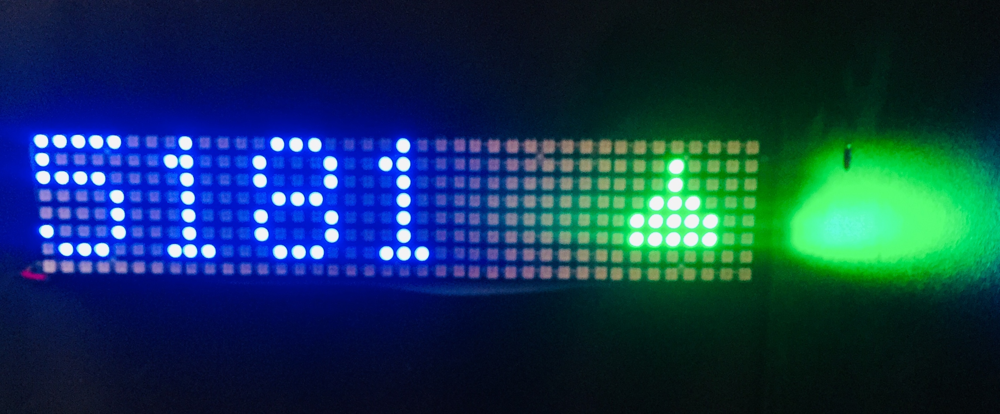

YouTube Subscriber Counter
- Type
- Project
- Area
- Hardware, IoT
- Code
- GitHub

A subscriber counter built on an ESP8266 with 8×8 NeoMatrix displays stacked row-wise, pulling live counts from the YouTube Data API.
Tech used
- 8×8 NeoMatrix displays
- NodeMCU (Wi-Fi module)
- YouTube Data API
- Libraries — Adafruit NeoMatrix, Adafruit NeoPixel, Adafruit GFX, ArduinoJSON, MusicEngine, SNTPtime